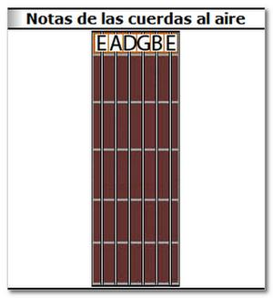

AFINACIÓN DE LA GUITARRA. AFINAR LAS CUERDAS.
Primeros conceptos
Quizás la parte más importante para un guitarrista es tener la guitarra bien afinada, porque por muy bien que la sepas tocar, si la guitarra está desafinada siempre sonará mal.
Antiguamente la afinación de la guitarra suponía un problema, ya que siempre había que “afinar de oído”-método que enseñaremos en esta lección-, y no todas las personas tienen el oído igual de bien afinado para la música.
Por suerte hoy en día existen multitud de afinadores electrónicos, incluso software para PC de afinación de guitarra, que resuelven este problema.
Existen varios tipos de afinación para la guitarra, siendo el estándar más utilizado el de La 440 Hz (La4) que viene a ser la nota y la frecuencia concreta que tiene dicha cuerda.
El concepto de afinación no es más que hacer girar las clavijas del clavijero hacia un lado y otro, sabiendo que a un lado bajarán los tonos de la cuerda (más grave) y hacia el otro subirán los tonos (más aguda). Para ello recomendamos ir con cuidado y con cierta precisión ya que pequeños movimientos rotando la clavija pueden hacer que nos pasemos de la afinación, teniendo que rotar hacia el lado contrario la clavija, así sucesivamente hasta encontrar el tono deseado.
{kind=link}
AFINAR LA GUITARRA DE OÍDO, SIN AFINADOR ELECTRÓNICO
Paso 1. Afinar la quinta cuerda: LA
Recomendamos empezar afinando la quinta cuerda en primer lugar, que es la que produce la nota LA a 440 Hz. Para ello puedes valerte de varios métodos, como pueden ser:
1.- Con otro instrumento:
Partir de un instrumento ya afinado (por ejemplo otra guitarra, un piano, etc.) que te de ese sonido de LA. Tendría que hacer sonar esa nota a la vez que se hace sonar la cuerda a afinar, moviendo la clavija de la cuerda hasta que se llegue a la afinación de la misma (es decir, que ambos sonidos sean iguales).
2.- Con elementos de ayuda:
Un instrumento muy útil en esta práctica es el afinador en silbato o el diapasón, que ya nos generaría el tono deseado para la quinta cuerda cuya nota es LA. El diapasón es una pieza en forma de U de metal elástico (generalmente acero) que cuando se le golpea haciéndolo vibrar, genera una onda sinusoidal casi inaudible dependiendo de la frecuencia (para poder escucharlo se debe acercar al oído, nunca apoyarlo en el cráneo, o amplificar apoyándolo sobre una caja de resonancia de madera, como la caja de un instrumento de cuerda, por ejemplo). El diapasón más utilizado es el llamado la 440 (que significa que genera una nota La a 440 Hz).
{kind=link}